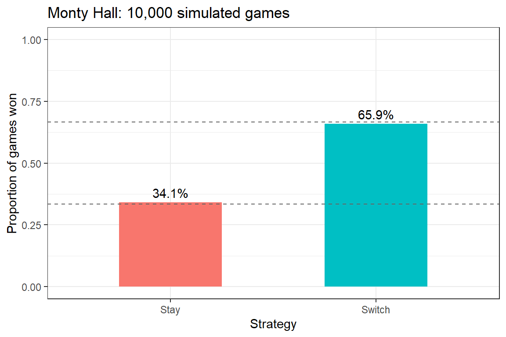
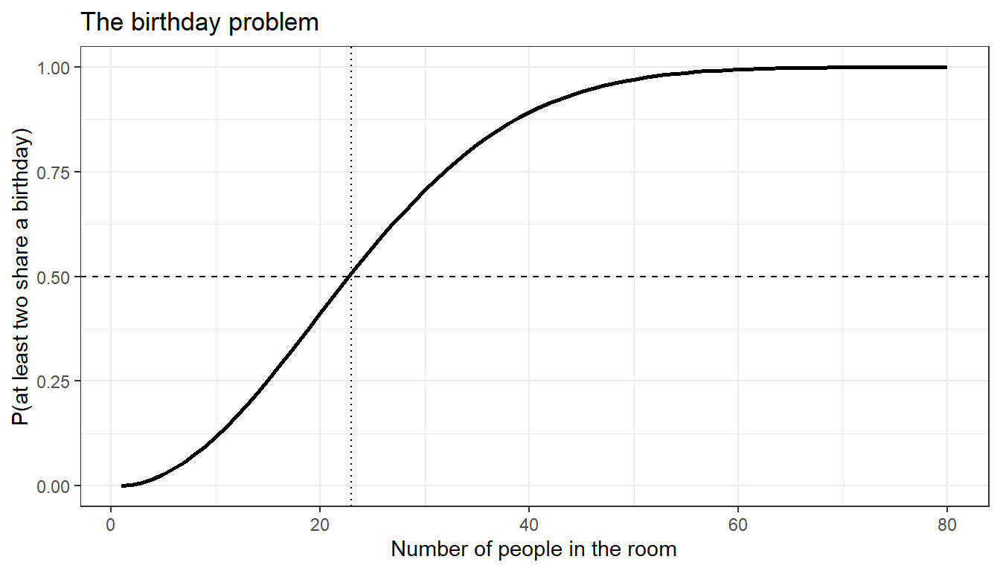
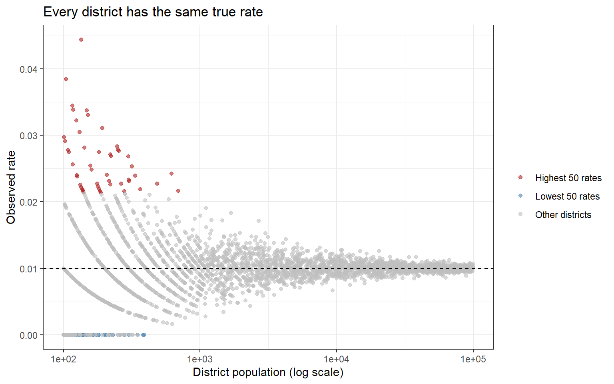
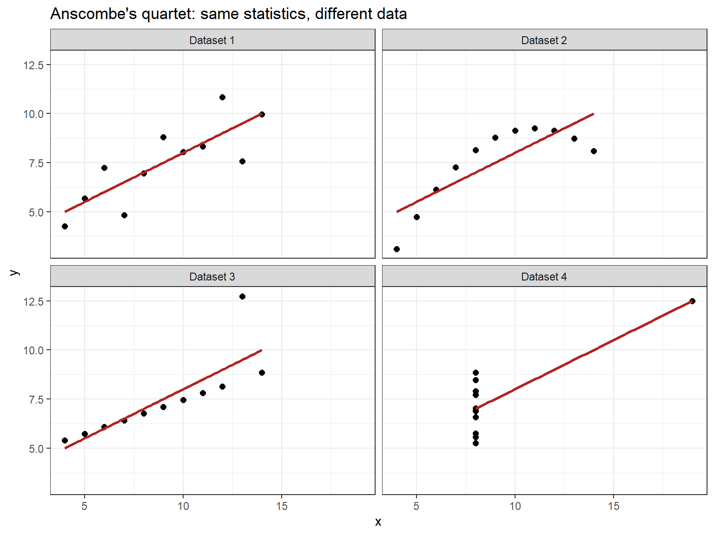
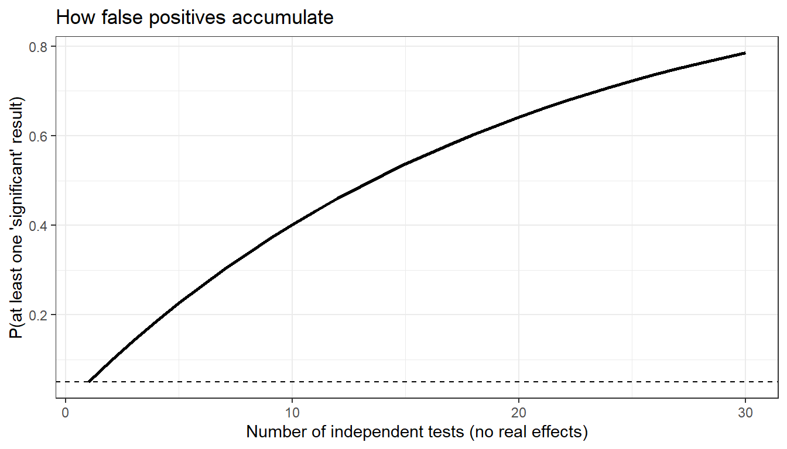

Code
install.packages("checkdown")
install.packages("ggplot2")
install.packages("dplyr")
install.packages("tidyr")
install.packages("flextable")

This tutorial introduces the foundations of quantitative reasoning and scientific thinking. It starts from a deceptively simple question: why can we not simply observe the world carefully and reason from what we see? The answer — that human perception and cognition are systematically biased in ways that evolution has shaped but that our research goals require us to overcome — provides the motivation for the entire scientific enterprise, and for the statistical methods taught in the rest of LADAL.
The tutorial moves through six parts. You will first meet the cognitive biases that distort how we perceive patterns, causes, and risks, and then the specific ways in which our intuitions about chance and numbers fail — from the Monty Hall problem to regression to the mean and Simpson’s paradox. You will then learn to recognise common logical fallacies, work through the philosophical foundations of science (Karl Popper’s falsificationism and its limits), and explore a series of case studies from the history of science. Albert Einstein the patent clerk, William Sealy Gosset the brewer, Ignaz Semmelweis, John Snow, Florence Nightingale, Ronald Fisher, Abraham Wald, Barry Marshall and Robin Warren, and several linguists each illustrate a concept that matters every time you analyse data. The final part applies everything to real claims and to the design of a linguistic study.
The tutorial is written for researchers in linguistics and the humanities who are new to quantitative methods. No prior knowledge of statistics is assumed. The R code included in the tutorial is optional: it lets you verify some of the more counterintuitive claims by simulation, but you can follow the argument without running a single line.
Martin Schweinberger. 2026. Introduction to Quantitative Reasoning: Why We Need Science. The Language Technology and Data Analysis Laboratory (LADAL), The University of Queensland, Australia. url: https://ladal.edu.au/tutorials/quant_intro/quant_intro.html (Version 3.1.2). doi: 10.5281/zenodo.19424873.
Most of this tutorial is conceptual, but several sections contain short simulations and visualisations. If you want to run them yourself, install the packages below (you only need to do this once).
install.packages("checkdown")
install.packages("ggplot2")
install.packages("dplyr")
install.packages("tidyr")
install.packages("flextable")Once the packages are installed, load them at the start of each session.
library(checkdown)
library(ggplot2)
library(dplyr)
library(tidyr)
library(flextable)By the end of this tutorial, you will be able to:
This tutorial assumes no prior knowledge of statistics or research methods and is designed as a first step. To run the optional R code, you need:
Readers who want to build directly on this foundation may proceed to Basic Concepts in Quantitative Research and then Descriptive Statistics.
This section explains why pure logical reasoning cannot answer empirical questions and why careful observation on its own is not enough either. It then documents the ways in which human cognition and perception are systematically biased — the core reason why a disciplined scientific methodology is necessary.
Before asking why science is necessary, it helps to establish what it is. A useful working definition is that science is a methodological process for acquiring knowledge about the world based on empirical evidence. Each part of that definition does some work. Science is methodological because it follows systematic, principled procedures rather than haphazard ones. It is a process because it is ongoing and self-correcting rather than a fixed body of facts. It is empirical because it is grounded in observation rather than pure speculation. And it is about the world because it is concerned with how things actually are, not merely with how they could logically be.
For some domains, reasoning alone works perfectly well. The formal sciences — logic and mathematics — proceed entirely through deduction:
Premise 1: Socrates is a human being
Premise 2: All humans are mortal
Conclusion: Therefore, Socrates is mortalIf the premises are true and the logic is valid, the conclusion must be true. No observation of Socrates is required.
The problem is that logic cannot tell us which possible world is our world. Consider three equally coherent possibilities:
Possible world 1: I raise my left arm after counting to 3
Possible world 2: I raise my right arm after counting to 3
Possible world 3: I raise neither arm after counting to 3All three are logically possible. To know which one actually happened, you need empirical evidence — an observation of what occurred. (For the record: I counted to two and raised neither arm.)
History offers a famous illustration of what happens when reasoning replaces observation. Aristotle argued that heavier objects fall faster than lighter ones, in proportion to their weight. The argument sounds plausible, and it was repeated as authoritative for close to two thousand years. It took people who were willing to test it — Simon Stevin and Jan Cornets de Groot dropping lead balls from a church tower in Delft in 1586, and Galileo Galilei rolling balls down inclined planes a few decades later — to show that it is wrong. We return to this story in Part 5.
If we need evidence, why not simply observe the world attentively? Because human beings are systematically biased observers. We notice what we expect, remember what confirms our beliefs, see patterns in noise, and misjudge probabilities in predictable ways. The remainder of this part — and all of Part 2 — documents these problems.
What we fear is often not what actually harms us. Our fear of strangers (“stranger danger”) is vivid and pervasive, yet crime statistics consistently show that most violence against children and adults is committed by family members and acquaintances, not by strangers. The misplaced fear has real costs, because it directs protective attention to the wrong places.
Shark attacks offer a second example. They are dramatic, memorable, and amplified by popular culture, yet in a typical year in the United States far more people are killed in accidents involving cattle than by sharks, and worldwide, mosquito-borne diseases such as malaria kill hundreds of thousands of people annually. The asymmetry between what we fear and what statistically threatens us is striking.
The explanation is that vivid, emotionally charged stories override statistical information. Kahneman and Tversky called this the availability heuristic: we judge how likely something is by how easily examples come to mind, and dramatic events come to mind very easily (Tversky and Kahneman 1974). Evolution favoured quick emotional responses to salient threats over careful actuarial reasoning, and we have inherited that preference.
Confirmation bias is the tendency to seek out, interpret, and remember information in ways that confirm what we already believe, while ignoring or discounting contradictory evidence. It is pervasive and insidious: it affects experts as much as novices, it operates even when we are trying to be objective, and it reinforces existing beliefs — including incorrect ones — rather than correcting them. You will see it demonstrated directly with the Wason selection task and the 2–4–6 puzzle in Part 3, and you will meet one of the most elegant personal remedies for it, Charles Darwin’s “golden rule”, in Part 5.

A ball and a bat together cost $1.10. The bat costs $1.00 more than the ball. How much does the ball cost?
Most people immediately answer “10 cents”. This is wrong: if the ball costs 10 cents, the bat costs $1.10, and the total is $1.20. The correct answer is 5 cents (ball $0.05, bat $1.05, total $1.10). The problem is one of three items in Shane Frederick’s Cognitive Reflection Test, and a large share of students at elite universities get it wrong (Frederick 2005).
The psychologist Daniel Kahneman distinguishes two modes of cognition (Kahneman 2011). System 1 operates automatically and effortlessly: it generates intuitive responses through pattern recognition and association, it is fast, and it regularly produces errors on problems that require careful reasoning. System 2 is deliberate, effortful, and analytical: it applies rules and checks its own work, but it is slow and we tend to avoid the effort it costs.
The ball and bat problem shows System 1 in action. The numbers $1.00 and $0.10 are salient and combine into a plausible total, so “10 cents” arrives almost instantly. System 2, if engaged, detects the error at once — but System 1 answers first, and System 2 is lazy about checking answers that feel right.
Science can be understood as a set of institutional and methodological procedures designed to force deliberate, effortful System 2 reasoning. Peer review, pre-registration, replication, controlled experiments, and statistical testing are all mechanisms for preventing the fast, intuitive, and frequently wrong conclusions of System 1 from being accepted as knowledge. Science is expensive in time and effort — and it produces more reliable knowledge precisely because of that cost.
In a classic experiment, B. F. Skinner placed hungry pigeons in boxes where food was delivered at regular intervals, with no connection to anything the pigeon did (Skinner 1948). Each pigeon nevertheless developed an idiosyncratic ritual — one turned anticlockwise in circles, another thrust its head into a corner of the box — which it happened to be performing when food first arrived.

The pigeons behaved as though their behaviour caused the food, even though delivery was entirely independent of it. Each accidental co-occurrence reinforced the behaviour, creating what Skinner called “superstitious” conditioning. Human superstitions work the same way: athletes who perform well while wearing a particular item of clothing start treating it as lucky, and gamblers develop “systems” based on patterns in random sequences.
The same tendency threatens research. If you run enough analyses on a dataset, some will produce “significant” results by chance alone — the statistical equivalent of the pigeon’s dance. This is one reason why hypotheses should be specified before data are collected (pre-registration) rather than inferred from the data after the fact. Part 5 shows how this problem contributed to the replication crisis.
Pareidolia is the perception of meaningful patterns — especially faces — in random or ambiguous stimuli. Famous examples include the “Face on Mars” photographed by the Viking 1 orbiter in 1976 (higher-resolution images taken by later missions showed an ordinary eroded hill), religious figures in the burn marks on toast, and the “Man in the Moon”, which different cultures see as different figures, including a rabbit.
The psychologist Bruce Hood (University of Bristol) offers a straightforward evolutionary explanation (Hood 2009). Detecting faces quickly — and telling friend from foe — was highly adaptive. The cost of a false negative (missing a real face, such as a predator or an enemy) could be fatal; the cost of a false positive (seeing a face where there is none) was a moment’s alarm. Evolution therefore favoured an over-sensitive face detector, and we inherit the result. You will meet the same trade-off between false positives and false negatives again when you learn about statistical errors of Type I and Type II.
Someone offers you $10 to wear a cardigan for one minute. Would you accept?
Most people would. Now consider an additional detail: the cardigan previously belonged to a convicted serial killer. Does that change your answer?
Hood has used this demonstration with audiences for years, and many people become reluctant, or at least uncomfortable, once they hear the cardigan’s history (Hood 2009). Rationally, the garment is just wool; its history leaves no physical trace that could harm the wearer. Yet the feeling of contamination is real and hard to dismiss by reasoning.
The evolutionary explanation mirrors the one for pareidolia. Ancestors who avoided objects associated with disease, death, or dangerous individuals had a genuine survival advantage, because contaminated objects can carry pathogens. The emotional response was adaptive then; today it fires in contexts where it no longer makes sense.
The anthropocentric bias (sometimes called experiential realism) is the assumption that the world appears to all organisms as it appears to us — that our perceptual experience constitutes reality rather than filtering it.
Consider human versus bee vision. Humans perceive light in the wavelength range of approximately 400–700 nanometres. Bees perceive roughly 300–650 nm, which includes ultraviolet light but excludes red. Flowers therefore look very different to bees than to us: many have ultraviolet patterns that guide bees towards nectar but are completely invisible to human eyes.


The cognitive linguists Vyvyan Evans and Melanie Green put this well:
“However, the parts of this external reality to which we have access are largely constrained by the ecological niche we have adapted to and the nature of our embodiment. In other words, language does not directly reflect the world. Rather, it reflects our unique human construal of the world: our ‘world view’ as it appears to us through the lens of our embodiment.”
— Evans and Green (2006, 46)
Any science that treats human perception as a transparent window onto reality — rather than as one evolved, partial, species-specific perspective — will systematically reproduce the biases of that perspective. This is a further argument for systematic, instrument-mediated, and community-checked science rather than careful personal observation alone.
Stare at the dot between the red and green squares for 30 seconds without looking away. Then immediately shift your gaze to the dot between the sand dunes.


After staring at the red square, the corresponding part of the dunes appears greenish; after staring at the green square, the other part appears reddish. The cells in your visual system that respond to red and to green adapt (become less responsive) during prolonged stimulation. When you then look at a neutral surface, the adapted channel responds more weakly than its counterpart, and you see the complementary colour. What you “see” is not simply what is there: it is the output of a neurophysiological process that depends on fatigue, context, and prior stimulation.
Gestalt psychology (from the German word for “form” or “shape”) studies how we perceive unified wholes from collections of parts. Its classic demonstrations show that perception is an active, constructive process rather than a passive recording.

The Kanizsa triangle above contains no triangle at all — only three “Pac-Man” shapes and three angle markers (Kanizsa 1976). Yet virtually everyone perceives a bright white triangle lying on top of the other elements. The brain constructs the missing contours from partial information, following the principle of closure. When the same elements are rearranged, the triangle disappears and you simply see three Pac-Man shapes:

Other Gestalt principles include proximity (nearby items are grouped together), similarity (similar items are grouped), continuity (smooth lines are preferred over abrupt changes), and common fate (items that move together are grouped). All of them make the same point: perception is a construction that the brain builds from partial information, prior expectations, and evolved heuristics.

Look at the two upside-down faces above. One may seem slightly unusual, but both appear roughly normal. Now look at the same images the right way up:

The distortion — eyes and mouth flipped relative to the rest of the face — that was barely noticeable upside down is now grotesque (Thompson 1980). When a face is inverted, we process it largely as a collection of features rather than as a configured whole, so local distortions go unnoticed. When the face is upright, our specialised configural face processing engages and the mismatch between the expected configuration and the actual image becomes obvious. The orientation of the image determines which processing route is used, and that choice determines what we see.
The ambiguous figure below illustrates how context determines categorical perception (Bruner and Minturn 1955):

In the sequence A, B, C, the middle symbol is read as the letter “B”.

In the sequence 12, 13, 14, the same symbol is read as the number “13”. The physical stimulus is identical; only the context changes, and the context activates different expectations. This matters directly for linguistics: the same linguistic form can carry different meanings in different contexts, and we cannot study meaning without studying context.
Q1. Pareidolia and Skinner’s pigeon experiment both illustrate the same underlying cognitive tendency. What is it?
Q2. A patch of lily pads doubles in size every day. It takes 48 days to cover the whole lake. How long does it take to cover half the lake?
This section shows how badly unaided intuition handles probability and data. It covers the Monty Hall and birthday problems, base-rate neglect, the law of small numbers, regression to the mean, Simpson’s paradox, and Anscombe’s quartet — and uses short R simulations so that you can check the counterintuitive answers for yourself.

Monty Hall hosted the American television game show Let’s Make a Deal. A simplified version of the game works as follows. Three doors are presented; behind two of them are goats, and behind one is a prize. You choose a door (say, Door 1). The host, who knows where the prize is, then opens a different door to reveal a goat (say, Door 3), and asks: “Do you want to switch to Door 2?”
Think about this carefully before reading on. Most people have a strong intuition about the answer.
The intuitive answer is that it does not matter: two doors remain, so the odds must be 50–50. This is incorrect. You should always switch. Switching wins with probability 2/3; staying wins with probability 1/3.
When you first chose Door 1, you had a 1/3 chance of being right, and Doors 2 and 3 together held a 2/3 chance. When the host opens Door 3 — and he always reveals a goat, because he knows where the prize is — that 2/3 probability does not vanish. It concentrates entirely on Door 2, while Door 1 keeps its original 1/3.
| Door | Before the host opens Door 3 | After the host opens Door 3 |
|---|---|---|
| Door 1 (your choice) | 1/3 | 1/3 |
| Door 2 | 1/3 | 2/3 |
| Door 3 | 1/3 | 0 (revealed as goat) |
The key is that the host’s action is not random: he never opens your door and never reveals the prize. That constraint is what carries information. If the logic still feels slippery, imagine 20 doors. You pick Door 1 (a 1/20 chance), and the host opens 18 of the remaining 19 doors, all revealing goats. Almost everyone would now switch to the one door the host carefully avoided opening. The logic with three doors is identical, only less obvious.
The Monty Hall problem has an instructive history. In 1990, Marilyn vos Savant published the correct answer in her Parade magazine column and received thousands of letters telling her she was wrong — many of them, by her account, from readers with doctorates, some of whom rebuked her for her mathematical ignorance. Even the legendary Hungarian mathematician Paul Erdős, one of the most prolific mathematicians who ever lived, reportedly refused to accept the answer until a colleague showed him a computer simulation of the game (Hoffman 1998).
Two lessons follow. First, credentials do not protect anyone from bad probabilistic intuition. Second, when intuition and argument disagree, an empirical test — even a simulated one — can settle the question. You can run such a test yourself:
set.seed(2026)
n_games <- 10000
# where the prize is, and which door the contestant picks first
prize <- sample(1:3, n_games, replace = TRUE)
choice <- sample(1:3, n_games, replace = TRUE)
# the host opens a door that is neither the contestant's choice nor the prize
host_opens <- vapply(seq_len(n_games), function(i) {
available <- setdiff(1:3, c(choice[i], prize[i]))
if (length(available) == 1) available else sample(available, 1)
}, integer(1))
# switching means taking the one door that is neither chosen nor opened
switch_to <- 6L - choice - host_opens
monty_results <- data.frame(
strategy = c("Stay", "Switch"),
win_rate = c(mean(choice == prize), mean(switch_to == prize))
)
monty_results strategy win_rate
1 Stay 0.3407
2 Switch 0.6593ggplot(monty_results, aes(x = strategy, y = win_rate, fill = strategy)) +
geom_col(width = 0.5) +
geom_hline(yintercept = c(1/3, 2/3), linetype = "dashed", colour = "grey40") +
geom_text(aes(label = sprintf("%.1f%%", 100 * win_rate)), vjust = -0.5) +
scale_y_continuous(limits = c(0, 1)) +
labs(x = "Strategy", y = "Proportion of games won",
title = "Monty Hall: 10,000 simulated games") +
theme_bw() +
theme(legend.position = "none")
The simulation reproduces the theoretical values almost exactly: staying wins about one third of the time, switching about two thirds.
How many people need to be in a room for there to be a 50% chance that at least two of them share a birthday? Think about your answer before reading on.
Most people guess something around 100 or even 183 (half of 365). The correct answer is only 23: with 23 people, the probability of at least one shared birthday is 50.7%.
The calculation is easiest via the complement — the probability that all 23 people have different birthdays (ignoring leap years):
Person 1: 365/365 (any birthday is fine)
Person 2: 364/365 (must differ from person 1)
Person 3: 363/365 (must differ from persons 1 and 2)
...
Person 23: 343/365 (must differ from all 22 others)
P(all different) = (365 × 364 × ... × 343) / 365^23 = 0.4927
P(at least one match) = 1 - 0.4927 = 0.5073The intuition fails because we think about our own chance of sharing a birthday with someone, whereas the question is about any pair. With 23 people there are 253 possible pairs, and each pair is another opportunity for a match. The function below computes the probability for any group size and plots how quickly it rises:
birthday_prob <- function(n, days = 365) {
1 - prod((days - 0:(n - 1)) / days)
}
birthday_prob(23) # 0.507[1] 0.5072972birthday_prob(70) # 0.999[1] 0.9991596birthday_df <- data.frame(group_size = 1:80) |>
mutate(prob_match = vapply(group_size, birthday_prob, numeric(1)))
ggplot(birthday_df, aes(x = group_size, y = prob_match)) +
geom_line(linewidth = 1) +
geom_hline(yintercept = 0.5, linetype = "dashed") +
geom_vline(xintercept = 23, linetype = "dotted") +
labs(x = "Number of people in the room",
y = "P(at least two share a birthday)",
title = "The birthday problem") +
theme_bw()
With 57 people the probability exceeds 99%, and with 70 people it exceeds 99.9%. We are reasonably good at linear arithmetic but very poor at reasoning about combinations and compounding probabilities — one of many reasons why statistical analysis cannot be replaced by intuition. The same logic explains why “amazing coincidences” are far more common than they feel: in a large enough set of opportunities, something unlikely is almost certain to happen.
A disease affects 1% of people who take part in a screening programme. The screening test detects 90% of people who have the disease, and it wrongly flags 9% of healthy people. Your test comes back positive. What is the probability that you actually have the disease?
Most people — and, in studies by Gerd Gigerenzer and colleagues, a large proportion of physicians — answer something close to 90% (Gigerenzer 2002). The correct answer is about 9%. The intuitive answer ignores the base rate: because the disease is rare, the healthy people who are wrongly flagged vastly outnumber the sick people who are correctly flagged.
Gigerenzer showed that this problem becomes much easier when it is expressed as natural frequencies — counts of people rather than percentages (Gigerenzer and Hoffrage 1995). Imagine 1,000 people:
people <- 1000
prevalence <- 0.01 # 1% have the disease
sensitivity <- 0.90 # 90% of sick people test positive
false_alarm <- 0.09 # 9% of healthy people test positive
sick <- people * prevalence # 10 people
sick_positive <- sick * sensitivity # 9 true positives
healthy <- people - sick # 990 people
healthy_positive <- healthy * false_alarm # about 89 false positives
# proportion of positive results that are true positives
sick_positive / (sick_positive + healthy_positive)[1] 0.09174312Out of roughly 98 positive results, only 9 come from people who are actually ill. The same reasoning applies whenever you look for something rare. An automatic classifier that flags hate speech in a corpus where only 1% of posts are hateful will produce mostly false alarms unless it is extremely accurate, and a “significant” result in a field where true effects are rare is more likely to be a false positive than most researchers assume.
In the United States, the counties with the lowest rates of kidney cancer are mostly rural, sparsely populated, and located in the Midwest, South, and West. It is tempting to explain this with clean air, fresh food, and an active outdoor lifestyle. But the counties with the highest rates of kidney cancer are also mostly rural and sparsely populated. The statistician Howard Wainer called the principle behind this the “most dangerous equation”: the variability of an average shrinks as the sample gets larger (Wainer 2007; Kahneman 2011). Small counties have both the highest and the lowest rates simply because small samples produce extreme values more often. Kahneman and Tversky called our failure to anticipate this the law of small numbers.
The simulation below creates 3,000 imaginary districts of very different sizes, all with exactly the same underlying rate of a condition, and records which districts end up with the most extreme observed rates:
set.seed(42)
n_districts <- 3000
population <- round(10^runif(n_districts, min = 2, max = 5)) # 100 to 100,000
true_rate <- 0.01 # identical everywhere
cases <- rbinom(n_districts, size = population, prob = true_rate)
districts <- data.frame(population, rate = cases / population) |>
mutate(extreme = case_when(
rank(-rate, ties.method = "first") <= 50 ~ "Highest 50 rates",
rank(rate, ties.method = "first") <= 50 ~ "Lowest 50 rates",
TRUE ~ "Other districts"
))
ggplot(districts, aes(x = population, y = rate, colour = extreme)) +
geom_point(alpha = 0.6) +
geom_hline(yintercept = true_rate, linetype = "dashed") +
scale_x_log10() +
scale_colour_manual(values = c("firebrick", "steelblue", "grey75")) +
labs(x = "District population (log scale)", y = "Observed rate",
colour = "", title = "Every district has the same true rate") +
theme_bw()
The funnel shape tells the whole story: all of the extreme rates, high and low, come from small districts. Corpus linguists encounter exactly this problem when they normalise frequencies per million words. A word that occurs once in a 500-word text has a normalised frequency of 2,000 per million — far higher than in any large corpus — not because the text is special but because the text is short. Always look at the size of the sample behind a rate.
In the 1880s, Francis Galton noticed that unusually tall parents tended to have children who were tall, but less extremely tall than themselves, and that unusually short parents had children who were short, but less extremely short (Galton 1886). He called this “regression towards mediocrity”; today we call it regression to the mean. Whenever a measurement combines a stable component (such as ability) and a chance component (such as luck on the day), extreme scores tend to be followed by less extreme ones, because part of what made them extreme was luck that does not repeat.
Kahneman tells a memorable story about this (Kahneman 2011). Flight instructors in the Israeli Air Force told him that praise did not work: when they praised a cadet for an excellent manoeuvre, the next attempt was usually worse, whereas when they shouted at a cadet for a poor manoeuvre, the next attempt was usually better. The instructors had drawn a causal conclusion from pure regression to the mean. Exceptionally good and exceptionally bad performances were partly lucky, so the next performance tended to be closer to average — whatever the instructor said.
The simulation below gives 1,000 students two tests of the same ability. Nothing happens to them between the tests:
set.seed(1)
n_students <- 1000
true_skill <- rnorm(n_students, mean = 60, sd = 10)
test1 <- true_skill + rnorm(n_students, sd = 8) # skill + luck on day 1
test2 <- true_skill + rnorm(n_students, sd = 8) # skill + luck on day 2
students <- data.frame(test1, test2) |>
mutate(group = case_when(
test1 >= quantile(test1, 0.9) ~ "Top 10% on test 1",
test1 <= quantile(test1, 0.1) ~ "Bottom 10% on test 1",
TRUE ~ "Middle 80%"
))
students |>
group_by(group) |>
summarise(mean_test1 = mean(test1), mean_test2 = mean(test2)) |>
mutate(across(where(is.numeric), ~ round(.x, 1))) |>
as.data.frame() |>
flextable() |>
set_table_properties(width = .95, layout = "autofit") |>
theme_zebra() |>
fontsize(size = 12) |>
fontsize(size = 12, part = "header") |>
align_text_col(align = "center") |>
set_caption(caption = "Mean scores on two tests of the same ability") |>
border_outer()group | mean_test1 | mean_test2 |
|---|---|---|
Bottom 10% on test 1 | 36.3 | 45.0 |
Middle 80% | 59.7 | 60.1 |
Top 10% on test 1 | 83.5 | 74.6 |
The top group gets worse and the bottom group gets better, even though nothing changed. Imagine that the bottom 10% had been sent to a remedial course between the two tests: the course would have looked effective even if it did nothing at all. This is why intervention studies need a control group, and why “we selected the worst performers, intervened, and they improved” is never, on its own, evidence that the intervention worked.
In 1973, the statistician Francis Anscombe constructed four small datasets that are almost identical in their summary statistics but completely different in structure (Anscombe 1973). The datasets ship with R as anscombe, so you can check this yourself:
anscombe_long <- anscombe |>
mutate(obs = row_number()) |>
pivot_longer(-obs, names_to = c(".value", "set"), names_pattern = "(.)(.)") |>
mutate(set = paste("Dataset", set))
anscombe_long |>
group_by(set) |>
summarise(
mean_x = mean(x), var_x = var(x),
mean_y = mean(y), var_y = var(y),
correlation = cor(x, y)
) |>
mutate(across(where(is.numeric), ~ round(.x, 2))) |>
as.data.frame() |>
flextable() |>
set_table_properties(width = .95, layout = "autofit") |>
theme_zebra() |>
fontsize(size = 12) |>
fontsize(size = 12, part = "header") |>
align_text_col(align = "center") |>
set_caption(caption = "Summary statistics of Anscombe's four datasets") |>
border_outer()set | mean_x | var_x | mean_y | var_y | correlation |
|---|---|---|---|---|---|
Dataset 1 | 9 | 11 | 7.5 | 4.13 | 0.82 |
Dataset 2 | 9 | 11 | 7.5 | 4.13 | 0.82 |
Dataset 3 | 9 | 11 | 7.5 | 4.12 | 0.82 |
Dataset 4 | 9 | 11 | 7.5 | 4.12 | 0.82 |
All four datasets have the same means, the same variances, and the same correlation (0.82). Now look at them:
ggplot(anscombe_long, aes(x = x, y = y)) +
geom_point(size = 2) +
geom_smooth(method = "lm", se = FALSE, colour = "firebrick") +
facet_wrap(~ set) +
theme_bw() +
labs(title = "Anscombe's quartet: same statistics, different data")
The first dataset is a noisy linear relationship, the second a clean curve, the third a perfect line distorted by one outlier, and the fourth has no relationship at all except for a single extreme point. A summary statistic compresses data, and compression throws information away. The lesson is simple and non-negotiable: always visualise your data before you trust a number that describes it. The Introduction to Data Visualization tutorial shows you how.
Q3. In the Monty Hall problem, why does switching win two thirds of the time rather than half of the time?
Q4. A spell-checking tool flags 95% of genuine misspellings and wrongly flags 5% of correctly spelled words. In a well-edited text, 1 word in 200 is misspelled. Roughly what proportion of flagged words are genuine misspellings?
Q5. A school gives a reading test and enrols the 10% lowest-scoring pupils in a new support programme. On a re-test, their average score has risen markedly. Why is this not, on its own, good evidence that the programme works?
This section introduces the logical fallacies you are most likely to meet in academic discourse, the media, and everyday argument — what they are, why they are fallacious, and how to counter them. It closes with two classic reasoning puzzles that expose confirmation bias and lead directly into Popper’s philosophy of science in Part 4.
A logical fallacy is a pattern of argument that appears persuasive but contains a fundamental flaw in reasoning. Fallacies are not merely weak arguments: they are invalid in ways that can be precisely identified and named. Recognising them matters because they are pervasive in public discourse, because everyone is susceptible to them (including trained researchers), and because they block accurate conclusions. Being able to name a fallacy is a practical tool for evaluating claims — and, more importantly, for catching yourself.
Cherry-picking means selectively reporting the evidence that supports a preferred conclusion while ignoring the evidence that contradicts it. It is confirmation bias turned into an argument.
Claim: "Vaccines cause autism!"
Evidence cited: one 1998 study, later retracted after it was found to be fraudulent
Evidence ignored: many large independent studies, involving millions of children,
that found no linkThe strength of evidence lies in its totality, not in the existence of a single supporting study: for almost any question, you can find at least one study pointing in any direction. Science counters cherry-picking with pre-registered analysis plans, the reporting of all results including null results, and systematic reviews and meta-analyses that pool evidence across studies.
An ad hominem argument attacks the character, credentials, group membership, or motives of the person making an argument instead of the argument itself — for example, “you can’t trust her statistics, she is funded by industry”, or “he is just saying that because he is young and naive”. A person’s character or affiliation does not determine whether their evidence is sound. That is a separate question, and it can only be answered by examining the evidence.
History provides a chilling example. In the 1920s and 1930s, the Nobel laureates Philipp Lenard and Johannes Stark led a campaign in Germany against relativity, dismissing it as “Jewish physics” and promoting a so-called “Deutsche Physik” in its place. The campaign said nothing about whether relativity’s predictions matched observations; it attacked the theory through the identity of its author. The predictions kept being confirmed regardless.
If you suspect that funding or ideology biased a study, the correct response is to look for the specific methodological flaw that the bias would have produced — not to dismiss the conclusion because of who reached it.
A straw man argument misrepresents an opponent’s position — usually by exaggerating or oversimplifying it — and then attacks the distorted version instead of the real one.
Person A: "We should have some regulations on firearms to reduce violence."
Person B: "You want to ban all guns and leave people completely defenceless!"Person A said nothing about banning all guns. A straw man is easy to knock down, so defeating it creates the appearance of having refuted the real argument without engaging with it. The scholarly antidote is the principle of charity (sometimes called steelmanning): engage with the strongest version of the view you disagree with.
An argument from ignorance claims that something is true because it has not been proven false, or false because it has not been proven true — “No one has proven that aliens do not exist, so they must be real”, or “Science cannot explain consciousness, so it must be supernatural”. A gap in knowledge is a reason to say “we do not yet know”, not a licence to fill the gap with a preferred explanation. The burden of proof lies with the person making the positive claim.
There is a subtle statistical version of this fallacy that you will meet again: failing to find a significant effect in a small study is not the same as showing that there is no effect. The study may simply have been too small to detect it (see the Power Analysis tutorial).
A false dichotomy presents a situation as though only two options exist, when in fact there are more — “You are either with us or against us”, or “Either we cut all social programmes or the economy collapses”. It eliminates the middle ground and polarises discussion by making nuanced positions invisible. In linguistics, debates framed as “nature or nurture” or “grammar or usage” often fall into this trap, when the interesting questions concern how the two interact.
A slippery slope argument claims that one step will inevitably lead, through a chain of further steps, to an extreme and undesirable outcome, without evidence that the chain would actually operate — “If we ban one type of gun, soon they will ban all guns.” Slope arguments are not always fallacious: if there is evidence that each step reliably leads to the next, the argument may be sound. The fallacy lies in relying on fear of the extreme outcome rather than on evidence for the intermediate steps.
A circular argument assumes its conclusion in its premises — “This book is true because the book says it is true”, or “I am trustworthy because I say I am trustworthy”. No independent reason is given, so if you accept the premise you have already accepted the conclusion. A valid argument moves from independent premises, through explicit reasoning, to a conclusion that was not already assumed.
A red herring introduces irrelevant information to distract from the question at hand.
Journalist: "Why did the government waste millions on this failed project?"
Politician: "Let me tell you about all the great schools we have built.
Education is so important, don't you agree?"Red herrings work because people naturally follow new conversational topics, and the original question is easily lost, especially in spoken interaction. Discourse analysts will recognise this as a topic shift used strategically to avoid answering.
The sunk cost fallacy means continuing to invest time, money, or effort in something because of what has already been invested, even when the expected future costs outweigh the expected future benefits. It is sometimes called the Concorde fallacy, after the supersonic airliner that the British and French governments continued to fund long after it was clear that it would never be commercially viable. Past costs cannot be recovered, so they are irrelevant to the decision about what to do next. The rational question is forward-looking: if you were starting from scratch today, would you begin this project?
Without awareness of logical fallacies, researchers and readers reach wrong conclusions, waste resources, defend indefensible positions, and spread misinformation — often in good faith.
Science provides institutional antidotes. Peer review is meant to catch cherry-picking and ad hominem reasoning; pre-registration counters confirmation bias; the expectation that you engage with the strongest version of competing theories counters straw men; and the norm of reporting null results counters selective reporting. Recognising fallacies in your own thinking is harder than recognising them in others’ — but it is the more important skill.
In 1966, the psychologist Peter Wason devised a puzzle that has since become one of the most studied problems in the psychology of reasoning (Wason 1968). You see four cards. Each card has a letter on one side and a number on the other. The visible faces are:
Card 1: A Card 2: K Card 3: 2 Card 4: 7The rule is: “If there is a vowel on one side of a card, then there is an even number on the other side.”
Choose the minimum set of cards that could reveal a violation of the rule.
The most common answer is Cards 1 and 3 (A and 2). This is incorrect. The correct answer is Cards 1 and 4 (A and 7). Card 1 must be turned over: it shows a vowel, so an odd number on the back would break the rule. Card 2 (K) is irrelevant, because the rule says nothing about consonants. Card 3 (2) is also irrelevant: the rule does not say that even numbers must have vowels on the back, so either a vowel or a consonant would be compatible with it. Card 4 (7) must be turned over, because a vowel on its back would break the rule.
In Wason’s studies, only a small minority of participants chose the correct pair. Most people turn over cards that could confirm the rule (the vowel and the even number) rather than the cards that could falsify it (the vowel and the odd number). Scientific thinking requires the opposite habit: actively looking for the evidence that could prove you wrong.
Wason’s earlier puzzle makes the same point in a different way (Wason 1960). I have a rule in mind that generates sequences of three numbers. The sequence below follows the rule:
2 4 6Your job is to discover the rule. You may propose as many new three-number sequences as you like, and I will tell you whether each follows the rule.
What is your hypothesis? Which sequence would best test it?
Most people form a hypothesis such as “even numbers increasing by 2” and then propose sequences that fit it: 8–10–12, 20–22–24, 100–102–104. Each is confirmed, and after a few rounds they announce their rule with confidence — and are told it is wrong. Wason’s actual rule was simply “any three numbers in increasing order”.
The problem is that every sequence that fits “increasing by 2” also fits “increasing”, so confirming instances can never tell the two hypotheses apart. The informative test is a sequence that your hypothesis says should fail: 1–2–3, or 3–10–97. If it nevertheless follows the rule, your hypothesis is falsified and you have learned something. Only by testing the boundaries of a hypothesis — by trying to break it — can you distinguish it from the many other hypotheses that are compatible with the evidence you already have.
Q6. Asked about rising crime rates, a politician replies: “I am proud of the new schools this government has built, and education is the foundation of a safe society.” Which fallacy does this illustrate?
Q7. A friend says: “I have watched five seasons of this series and it has been mediocre throughout. I might as well finish it — I have already invested 40 hours.” What is the flaw in this reasoning?
This section develops a fuller definition of science, distinguishes empirical from formal sciences, and walks through the scientific method as a cycle of hypothesis testing. It uses Clever Hans and the N-ray affair to show why controls and blinding matter, introduces Popper’s principle of falsification and its limits, and explains what it means for linguistics to be an empirical science.
The working definition from Part 1 can now be made more precise. Science is a fundamentally methodological enterprise that aims to build and organise knowledge about the empirical world in the form of testable explanations and predictions, by means of systematic observation and experimentation, while guarding against bias.
Each element of that definition responds to a problem you have already met. Science is methodological because it follows principled, replicable procedures, so that others can check what was done. It guards against bias because Parts 1 to 3 showed how unreliable unaided perception and reasoning are. It is empirical because logic alone cannot tell us which possible world we live in. Its claims must be testable — in Popper’s terms, falsifiable — so that evidence can in principle prove them wrong. It aims to be explanatory (accounting for why a pattern occurs, not just that it occurs) and predictive (generating expectations about observations not yet made). And it relies on systematic observation and experimentation, often mediated by instruments that extend or correct our senses.
Empirical sciences examine phenomena in the world through the scientific method, with the goal of explaining and predicting what actually exists and occurs. Biology, physics, chemistry, psychology, sociology, and linguistics are empirical sciences. They observe, form and test hypotheses, and revise theories in response to evidence.
Formal sciences examine abstract systems through axiomatic reasoning, with the goal of logical coherence. Mathematics, formal logic, theoretical computer science, and parts of formal linguistics are formal sciences. They start from axioms, apply logical operations, and derive theorems. Crucially, formal sciences can prove their results, because their claims concern abstract objects defined by their own axioms.
The difference is epistemological. Formal sciences can establish truths by proof; empirical sciences cannot prove anything in that strict sense — they can only test claims and, potentially, refute them. As you will see below, Popper made this asymmetry the centre of his account of science. Statistics sits at the boundary: its theorems are mathematics, but its purpose is to help empirical scientists reason under uncertainty.

Science does not proceed in a straight line from observation to truth. It is a cycle of hypothesis formation, testing, revision, and renewed testing — a continuous, self-correcting process. In its textbook form, the cycle has the following steps:
The abstract steps become concrete with a trivial everyday example:
Observation: My keys are missing.
Question: Where are my keys?
Literature: I have left them on the TV table before.
H₁: My keys are on the TV table.
H₀: My keys are NOT on the TV table.
Design: I will check the TV table.
Data: I checked — no keys there.
Analysis: I cannot reject H₀.
Conclusion: My keys are probably elsewhere.
New H₁: My keys are in my coat pocket.
[Repeat]This trivial example already contains a subtle point. “I looked and did not find them” is only good evidence that the keys are not on the table if the search was thorough enough to find them had they been there. A quick glance in a dark room would not be. In statistics, the equivalent of search thoroughness is called statistical power: a small study that finds nothing has not shown that nothing is there.

In the early 1900s, a horse named Clever Hans became famous across Europe for apparently being able to perform arithmetic, answer questions in German, spell words, and tell the time. His owner, the retired schoolteacher Wilhelm von Osten, would ask a question and Hans would tap out the answer with his hoof. In 1904 a commission of experts, including the psychologist Carl Stumpf, examined Hans and found no evidence of deliberate trickery. Von Osten appeared to genuinely believe in his horse’s abilities.
Stumpf’s student Oskar Pfungst then took a more systematic approach (Pfungst 1911). He designed controlled experiments that varied two factors: whether the questioner knew the correct answer, and whether Hans could see the questioner.
| Condition | Result |
|---|---|
| Questioner knows the answer and is visible to Hans | Hans usually answers correctly |
| Questioner does not know the answer | Hans rarely answers correctly |
| Hans wears blinkers and cannot see the questioner | Hans rarely answers correctly |
The pattern was unambiguous: Hans could only answer when he could see someone who knew the answer.
Pfungst found that questioners unconsciously gave tiny cues that Hans had learned to read. After asking a question, a questioner would lean forward slightly and tense up as Hans began tapping; as Hans reached the correct number, the questioner would relax or straighten up almost imperceptibly. Hans had learned to start tapping at the first cue and stop at the second. He was genuinely clever — but at reading people, not at arithmetic. Strikingly, Pfungst found that he could not stop giving the cues himself, even once he knew about them.
Appearances deceive: even expert commissions were fooled by careful observation without proper controls. Observers who believed in Hans tended to confirm their belief through uncritical observation. Von Osten was not deceiving anyone — the cues were given entirely without awareness. Only a design that systematically manipulated what the questioner knew and what the horse could see revealed the truth.
The term Clever Hans effect now refers to any situation in which an experimenter’s unconscious behaviour influences a subject’s responses. It is the reason for double-blind designs, in which neither the participant nor the person collecting the data knows which condition the participant is in. It is also a live issue in machine learning, where classifiers sometimes achieve high accuracy by exploiting irrelevant cues in the data (a watermark, a file-name pattern, the length of a text) rather than learning the property they are supposed to detect.
Clever Hans shows that an experimenter can unknowingly influence a subject. The N-ray affair shows that an experimenter can unknowingly influence himself. In 1903, the respected French physicist René Blondlot announced the discovery of a new form of radiation, which he called N-rays after his university in Nancy. Within a short time, dozens of researchers — mostly in France — published papers describing N-rays’ properties, which were detected by faint changes in the brightness of a spark or a phosphorescent screen.
In 1904, the American physicist Robert W. Wood visited Blondlot’s laboratory. During a demonstration in a darkened room, Wood quietly removed the aluminium prism that was supposed to be essential for producing the effect. Blondlot continued to report seeing the N-rays exactly as before. Wood’s report ended the matter for most physicists outside France. N-rays did not exist; the observations were produced by expectation acting on judgements of faint, ambiguous stimuli.
The lesson is uncomfortable: honest, competent scientists can “see” effects that are not there when the measurement depends on subjective judgement and the observer knows what to expect. Blinding protects researchers against themselves, not just against dishonest colleagues.
Linguists face a version of this problem that cannot be entirely designed away. William Labov described the observer’s paradox: the aim of sociolinguistic research is to find out how people speak when they are not being systematically observed, yet the data can only be obtained through systematic observation (Labov 1972). As soon as speakers know they are being recorded, their speech tends to shift towards more careful, standard forms. Labov’s solutions — interview techniques that draw speakers into emotionally engaging narratives, and anonymous rapid surveys such as the department store study described in Part 6 — are methodological responses to the same insight that Pfungst reached: the act of observation is itself a variable.

The Austrian-British philosopher Karl Popper (1902–1994) built his philosophy of science around a problem that the Scottish philosopher David Hume had already identified: we cannot logically justify moving from many observations to a general law (Popper 1959).
Traditional view:
Observation 1: Swan 1 is white
Observation 2: Swan 2 is white
...
Observation 10,000: Swan 10,000 is white
↓
Law: All swans are whiteNo number of confirming observations can prove a universal generalisation. However many white swans you observe, the next one might be black. And indeed, in 1697 the Dutch navigator Willem de Vlamingh and his crew saw black swans on the river in Western Australia that he named the Swan River — a sighting that refuted a generalisation that had seemed secure to Europeans for centuries.
Notice the asymmetry: a single black swan is enough to refute the universal claim. We cannot verify universal claims by accumulating positive instances, but we can test them by seeking negative ones.
A theory is scientific if, and only if, it is falsifiable.
A theory is falsifiable when it is possible to describe, in advance, what kind of observation would show it to be wrong. Falsifiable theories take an empirical risk: they stake out a position that could be contradicted by evidence.
A theory that is compatible with every possible observation is not scientific — not because it is necessarily false, but because it cannot be tested and therefore cannot take part in the self-correcting process that constitutes science.
“All swans are white” is falsifiable, because a single non-white swan would refute it. “Smoking causes lung cancer” is falsifiable, because large epidemiological studies could have found no association (they found a strong one). “The Earth orbits the Sun” was falsifiable too: it predicts that nearby stars should appear to shift slightly against more distant ones as the Earth moves around its orbit (stellar parallax). By contrast, “Everything happens for a reason” is compatible with any possible outcome, and so is a claim about a patient’s symptoms that can be interpreted as confirming the theory whatever the patient does.
Popper later described how his ideas took shape in Vienna in 1919, when he was 17 (Popper 1963). He was impressed by three theories that were fashionable at the time: Marx’s theory of history, Freud’s psychoanalysis, and Alfred Adler’s “individual psychology”. What struck him was that their admirers found confirmations everywhere. Whatever happened, the theory could explain it.
Popper tells of reporting a case to Adler that did not seem particularly Adlerian. Adler, who had not seen the child, analysed it without hesitation in terms of his theory of inferiority feelings. When Popper asked how he could be so sure, Adler replied that he had a thousandfold experience — to which Popper retorted that with this new case, his experience was presumably now a thousand-and-one-fold. The point was that each “confirmation” was merely an interpretation in the light of the theory, so it added nothing.
The contrast was Einstein. In 1919, Arthur Eddington’s eclipse expeditions had just tested a prediction of Einstein’s general theory of relativity: that starlight passing close to the Sun would be bent by a specific amount. If the measurements had shown no deflection, or the smaller deflection predicted by Newtonian reasoning, the theory would have been in serious trouble. Einstein’s theory, unlike Adler’s, could have failed. That risk, Popper concluded, is what makes a theory scientific. Part 5 looks at the eclipse story in detail — including some complications that popular versions leave out.
Falsification is a powerful idea, but real science is messier than the black swan example suggests, and you should know where the simple version breaks down.
First, hypotheses are never tested in isolation. Any prediction depends on a whole network of background assumptions — about the instruments, the measurements, and other theories. When a prediction fails, logic tells you that something in the network is wrong, but not what. This is known as the Duhem–Quine problem (Duhem 1954; Quine 1951). The history of astronomy offers a perfect illustration. In the 1840s, the orbit of Uranus did not match the predictions of Newton’s theory of gravitation. Rather than abandon Newton, the French mathematician Urbain Le Verrier proposed an auxiliary hypothesis: an unseen planet was pulling Uranus off course. He calculated where it should be, and in 1846 Johann Galle found Neptune within about a degree of the predicted position. Newton’s theory had been rescued, spectacularly.
Le Verrier then tried the same move with the planet Mercury, whose orbit also deviated slightly from Newtonian predictions. He proposed another unseen planet, which he named Vulcan. Astronomers searched for decades; Vulcan was never found. The anomaly was finally explained in 1915 by Einstein’s general theory of relativity, which predicted Mercury’s orbit exactly. The same strategy — protect the theory with an auxiliary hypothesis — produced a triumph in one case and a dead end in the other. The difference was that the Neptune hypothesis made a new, testable prediction that came true, whereas the Vulcan hypothesis did not.
Second, a single anomaly rarely overturns a successful theory in practice. The historian and philosopher Thomas Kuhn argued that scientists usually work within a shared framework, or paradigm, and treat anomalies as puzzles to be solved within it; only when anomalies accumulate and a better alternative is available does the field shift (Kuhn 1962). Popper’s criterion is best understood as a norm for how scientists should treat their theories — stating in advance what would count against them, and taking failed predictions seriously — rather than as an exact description of how scientific communities always behave.
Ask of every hypothesis: “What result would count against this?”, and write the answer down before you collect the data. Design studies that could genuinely fail, not just studies that are likely to confirm what you expect. Treat a hypothesis that has survived many serious attempts at refutation as well corroborated, not as proven. When a prediction fails, ask which assumption is most likely to be wrong — and be suspicious of any auxiliary hypothesis that rescues your theory without making a new, testable prediction.
Linguistics is the scientific study of language and of individual languages. Linguists aim to uncover, describe, explain, and model the systems that underlie human language use. As an empirical science, linguistics studies language through systematic observation of real language use, tests hypotheses about linguistic structure and function, and produces claims that can be checked against data.
Linguistics has its own classic episode of falsification and auxiliary hypotheses. In the nineteenth century, Jacob Grimm described regular correspondences between consonants in the Germanic languages and in other Indo-European languages — for example, Latin pater corresponds to English father, with /p/ corresponding to /f/ (Grimm’s law). But the correspondences had exceptions. Latin pater should correspond to a Gothic form with a /θ/ sound, yet Gothic has fadar, with a voiced consonant.
In 1875, the Danish linguist Karl Verner showed that these exceptions were themselves regular: the unexpected voiced consonants appeared precisely where the stress in the ancestral form had not fallen on the immediately preceding syllable, as can still be seen in Sanskrit, where the stem pitár- (“father”) is stressed on its second syllable (Verner 1877). The apparent counterexamples became evidence for a second sound law. Shortly afterwards, the Neogrammarians Hermann Osthoff and Karl Brugmann declared that sound laws operate without exceptions (Osthoff and Brugmann 1878). Whatever one thinks of that principle today (sound change is complicated by analogy, borrowing, and lexical diffusion), it was a bold, falsifiable methodological commitment: it meant that every exception had to be explained rather than shrugged off, and that commitment drove historical linguistics forward.
The distinction between descriptive and prescriptive approaches to language illustrates the difference between scientific and non-scientific claims.
| Approach | Character | Example |
|---|---|---|
| Descriptive (scientific) | Describes what speakers actually do | “English speakers frequently use ain’t in casual conversation” |
| Prescriptive (normative) | Prescribes what speakers should do | “You should not say ain’t” |
Prescriptive claims are not falsifiable in Popper’s sense, because they are normative rather than empirical: no observation of what people actually say can show that “you should not say ain’t” is false. Descriptive claims, by contrast, can be tested against corpus and experimental data. Note that prescriptive attitudes can themselves be studied scientifically — “Most speakers in this community believe that ain’t is incorrect” is a descriptive, testable claim about beliefs.
A landmark study in language acquisition shows the full cycle at work. It had long been debated whether infants could segment the continuous stream of speech into words using statistical information alone. Jenny Saffran, Richard Aslin, and Elissa Newport tested this directly (Saffran, Aslin, and Newport 1996):
Observation: Speech has no reliable pauses between words, yet infants learn words.
Question: Can infants use statistical regularities to find word boundaries?
Literature: Nativist accounts assume substantial innate linguistic knowledge;
learning-based accounts propose that infants track distributional
patterns in the input.
H₁: Infants track how predictably one syllable follows another
(high within words, low across word boundaries).
Design: 8-month-old infants hear 2 minutes of a continuous artificial
language made of nonsense "words", with no pauses or stress cues.
They are then tested on "words" versus "part-words" that span
a word boundary.
Data: How long infants listen to each type of test item.
Analysis: Compare listening times for words versus part-words.
Conclusion: Infants listened reliably longer to part-words (a novelty
preference), showing they had distinguished the two.
Refinement: Does this work with natural languages, other species,
non-linguistic sounds, older learners?
[Repeat]The study did not settle the nature–nurture debate (that would be a false dichotomy anyway), but it turned a vague disagreement into a precise, testable question and answered it. That is what the scientific method is for.
Q8. A researcher proposes: “Students who feel positively about their lecturer will perform better on written assessments.” Is this claim scientific in Popper’s sense?
Q9. A therapist argues: “If a patient denies having repressed childhood trauma, that shows how deeply it is repressed. If a patient acknowledges difficult memories, that confirms the trauma theory.” What is the core scientific problem?
Q10. Le Verrier explained the anomalous orbit of Uranus by predicting an unseen planet (Neptune, which was then found), and tried the same move for Mercury (Vulcan, which was never found). What does this pair of cases show?
This section uses case studies of real scientists to illustrate the concepts that underpin quantitative research: measurement and estimation, the principle that ideas are judged independently of who proposes them, risky predictions, controlled comparison, randomisation, survivorship bias, and the habits that protect researchers from fooling themselves. It also looks honestly at cases where scientific communities failed to live up to their own ideals.
A word of caution before you begin. Stories about famous scientists tend to be polished into legends in which a lone genius sees the truth and the evidence falls neatly into place. Real history is messier, and the mess is often where the most useful lessons lie. Where a popular version of a story is inaccurate or disputed, this section says so.
Around 240 BCE, Eratosthenes, the head of the great library of Alexandria, estimated the circumference of the Earth using nothing more than shadows, geometry, and a distance. He had heard that at noon on the summer solstice, the Sun shone straight down a well in Syene (modern Aswan) and cast no shadow. At the same moment in Alexandria, further north, a vertical stick cast a shadow corresponding to an angle of about 7.2 degrees — one fiftieth of a full circle. If the Sun’s rays are parallel and the Earth is round, the distance between the two cities must be one fiftieth of the Earth’s circumference.
angle_degrees <- 7.2
distance_stadia <- 5000 # Alexandria to Syene
circumference_stadia <- distance_stadia * 360 / angle_degrees
circumference_stadia # 250,000 stadia[1] 250000# the answer in km depends on which "stadion" Eratosthenes used
stadion_m <- c(short = 157.5, long = 185)
circumference_stadia * stadion_m / 1000 # compare: about 40,000 kmshort long
39375 46250 Depending on which length of the stadion he used — and historians still disagree — his estimate was between about 2% and 16% off the modern value. The case illustrates three ideas you will use constantly. A good estimate can come from very simple measurements combined with explicit assumptions (parallel sunlight, a spherical Earth, an accurate distance). Every estimate carries uncertainty that depends on those assumptions. And the uncertainty in the units of measurement can matter as much as the uncertainty in the observation itself.
In 1905, Albert Einstein was 26 years old and working as a “technical expert, third class” at the Swiss Federal Patent Office in Bern. After graduating from the Zurich Polytechnic in 1900 he had applied, unsuccessfully, for academic assistant positions, and he held no university post. In that single year he published four papers in the journal Annalen der Physik that changed physics: on the photoelectric effect (for which he later received the Nobel Prize), on Brownian motion (which provided strong evidence that atoms exist), on the special theory of relativity (Einstein 1905), and on the equivalence of mass and energy, E = mc². His first university appointment came only in 1908.
The papers were taken seriously because of what they said, not because of who wrote them. Max Planck, one of the most eminent physicists in Germany, engaged with special relativity almost immediately. The episode illustrates a principle that the sociologist Robert K. Merton later called universalism: claims are to be evaluated by impersonal criteria — agreement with observation and with previously confirmed knowledge — and not by the race, nationality, religion, class, or status of the person making them (Merton 1942). An idea either fits the evidence and makes successful predictions, or it does not.
It is worth being precise about what this story shows, because it is often overstated. Einstein was not an untrained outsider: he had a physics degree, completed his doctorate at the University of Zurich in the same year, and published through the normal channels of his discipline. The point is not that credentials are worthless, but that the absence of an academic position did not stop his arguments from being judged on their merits.
Merton described four norms that, in his view, characterise the ethos of science. They are genuinely list-like, so here they are as a list:
Merton’s 1942 essay was originally published as “Science and technology in a democratic order”, and universalism does echo democratic ideals such as equality before the law. But the norms describe how scientific claims should be evaluated. As the cases of Semmelweis and Wegener below show, they are ideals that scientific communities have not always met.
There is another sense in which science is emphatically not democratic: questions of fact are not settled by majority vote. In 1931, a pamphlet titled Hundert Autoren gegen Einstein (“A Hundred Authors Against Einstein”) was published in Leipzig, collecting objections to relativity. Einstein is said to have responded that if he were wrong, one author would have been enough. Whether or not he said it in exactly those words, the principle is sound: one well-designed experiment that contradicts a theory outweighs any number of people who disapprove of it. What counts is the quality of the evidence and the argument, not the number or status of the people who hold a view.
The most radical illustration of universalism comes from statistics itself. William Sealy Gosset was a chemist and brewer at the Guinness brewery in Dublin, where he worked on the problem of drawing reliable conclusions from very small samples of barley and hops. Guinness did not allow its employees to publish under their own names, so in 1908 Gosset published his solution in the journal Biometrika under the pseudonym “Student” (Student 1908). The method, now known as Student’s t-test, became one of the most widely used statistical tests in the world. Its readers could not know that the author was a brewery employee rather than a professor. They could only judge the mathematics — which is exactly the point. You will use Gosset’s test in the Basic Inferential Statistics tutorial.
In 1847, the Hungarian physician Ignaz Semmelweis was working at the Vienna General Hospital, which had two maternity clinics. In the first clinic, staffed by doctors and medical students, a much larger proportion of mothers died of puerperal (“childbed”) fever — in the years before 1847, roughly 10% compared with around 4% in the second clinic, which was staffed by midwives. The two clinics admitted women on alternate days, which made the comparison close to a natural experiment. When a colleague died after being cut by a scalpel during an autopsy, with symptoms resembling those of the dying mothers, Semmelweis concluded that doctors were carrying “cadaverous particles” from the dissection room to the delivery room. He required staff to wash their hands in a chlorinated lime solution, and mortality in the first clinic fell to around 1–2%.
The evidence was strong, yet Semmelweis’s conclusions were widely rejected. Part of the problem was his own: he was slow to publish (his book appeared only in 1861), and he responded to critics with increasingly bitter attacks (Semmelweis 1861). But part of the problem lay with the medical establishment, which found it offensive to be told that physicians themselves were causing the deaths, and which had no theory of germs to explain how the mechanism could work. The reflex rejection of new evidence because it contradicts established norms is sometimes called the Semmelweis reflex.
Alfred Wegener’s story is similar. In 1912 Wegener, a meteorologist and polar explorer, proposed that the continents had once been joined and had drifted apart. He assembled impressive evidence: the jigsaw fit of the coastlines of South America and Africa, matching rock formations and fossils on different continents, and traces of past glaciation in places that are now tropical (Wegener 1915). Most geologists rejected the idea for decades. They had a legitimate objection — Wegener could not provide a convincing physical mechanism for how continents could move — but his status as an outsider to geology did not help his case. Only in the 1960s, when evidence of seafloor spreading revealed the mechanism, was continental drift absorbed into the theory of plate tectonics. Wegener did not live to see it; he died on an expedition in Greenland in 1930.
These cases show that universalism is a norm, not a guarantee. Science corrects itself, but not necessarily quickly or fairly. Max Planck, whose own ideas had met resistance, observed in his autobiography that a new scientific truth often triumphs not because its opponents are convinced but because they eventually die and a new generation grows up familiar with it (Planck 1950). A study of the life sciences found evidence that this is more than a quip: after the unexpected death of a prominent scientist, outsiders to that scientist’s circle published more work in the field (Azoulay, Fons-Rosen, and Graff Zivin 2019). Merton also described the opposite bias, the Matthew effect: eminent scientists tend to receive more credit than lesser-known researchers for comparable contributions (Merton 1968).
Two lessons follow for your own work. First, evaluate claims — including claims made by prominent researchers, and including your own — on their evidence and reasoning, not on the standing of their authors. Second, when you encounter a surprising claim from outside the mainstream, the right response is neither automatic acceptance nor automatic rejection, but the question: what evidence would tell us whether this is right?
The famous eclipse test concerned Einstein’s general theory of relativity (1915), not the special theory of 1905. General relativity describes gravity as the curvature of space and time by mass (Einstein 1916). One consequence is that light passing close to a massive body such as the Sun should be deflected. Einstein calculated that starlight grazing the edge of the Sun should be bent by 1.75 seconds of arc — about twice the value (roughly 0.87 seconds of arc) that one obtains by treating light as a stream of particles subject to Newtonian gravity.
The effect cannot normally be seen, because the Sun’s glare drowns out nearby stars. During a total solar eclipse, however, the stars around the Sun become visible and can be photographed. The prediction was that these stars would appear slightly displaced — pushed outwards, away from the Sun — compared with their positions on photographs of the same part of the sky taken at night, when the Sun is elsewhere. Popular retellings sometimes say that a star became visible that should have been hidden behind the Sun. That is not what was tested: the stars would have been visible either way; the question was where they appeared.
The story contains a twist that is rarely told. In 1911, before his theory was complete, Einstein had calculated a deflection of only about 0.87 seconds of arc — the same value as the Newtonian estimate. A German expedition led by Erwin Freundlich travelled to Crimea to test it during the eclipse of August 1914, but the First World War broke out, and the team members were interned before they could make observations. Had the expedition succeeded, it would probably have found a deflection about twice as large as Einstein then predicted. By 1915 Einstein had corrected his calculation to 1.75 seconds of arc. The theory was refined before it was tested — a reminder that the history of science involves luck as well as genius.
On 29 May 1919, two British expeditions organised by Frank Dyson and Arthur Eddington photographed a total eclipse from Sobral in Brazil and from the island of Príncipe off the west coast of Africa. At a joint meeting of the Royal Society and the Royal Astronomical Society in November 1919, they announced that the measurements agreed with Einstein’s prediction and not with the Newtonian value (Dyson, Eddington, and Davidson 1920). Newspapers around the world turned Einstein into a celebrity almost overnight.
The data, however, were far from clean. Clouds hampered the Príncipe observations, and one set of plates from Sobral, taken with the main astrographic telescope, gave a value closer to the Newtonian prediction. Dyson and Eddington set those plates aside because the telescope’s focus appeared to have shifted in the heat, and relied on plates from a smaller instrument that agreed with Einstein. Critics later argued that Eddington, who was already convinced of relativity, had let his expectations influence which data to trust. Historians still debate the decision; a careful re-examination concluded that the choices were defensible on technical grounds (Kennefick 2009), and a modern re-measurement of the discarded Sobral plates in 1979 also supported Einstein’s value. Later eclipse expeditions, and much more precise radio-astronomy measurements from the 1960s onwards, confirmed the prediction beyond reasonable doubt.
The episode is a textbook case of both the power and the fragility of empirical testing. It was a genuinely risky prediction: nature could have said no. But it also shows how much depends on decisions about which data to include — decisions that are only trustworthy when they are made transparently and, ideally, before the results are known. Today we would call this a problem of researcher degrees of freedom, and it is the reason for pre-registration.
Einstein’s personal attitude is more nuanced than the tidy version of the story suggests. According to a later recollection by his student Ilse Rosenthal-Schneider, when she asked him what he would have done if the eclipse had not confirmed his prediction, he replied that he would have felt sorry for the dear Lord, because the theory was correct. Taken at face value, that is supreme confidence rather than readiness to abandon the theory.
Yet in print, Einstein did precisely what Popper recommended: he stated in advance which observation would sink his theory. In his popular book on relativity, he wrote that if the predicted shift of spectral lines towards the red end of the spectrum in strong gravitational fields (the gravitational redshift) did not exist, general relativity would be untenable (Einstein 1920). That prediction was confirmed with high precision in 1959 by Robert Pound and Glen Rebka, who measured the tiny frequency shift of gamma rays travelling up and down a 22-metre tower at Harvard. Einstein also pointed out that his theory accounted for the anomalous orbit of Mercury — the same anomaly that Le Verrier’s Vulcan had failed to explain (Part 4).
The distinction matters. What makes science work is not that individual scientists are free of conviction — they rarely are — but that their theories are exposed to tests that could fail, and that the community takes the results seriously.
A prediction is risky when, without the theory, you would expect a different result. Light bending by exactly 1.75 seconds of arc was not something anyone expected before Einstein; confirming it therefore said much more than confirming something everyone already believed. In your own research, a hypothesis that predicts a specific direction and approximate size of an effect is more informative — because it is more easily refuted — than one that predicts only “some difference”.
Well into the 1980s, the medical consensus held that stomach ulcers were caused by stress, spicy food, and excess stomach acid, and that bacteria could not survive in the acidic environment of the stomach. In Perth, Western Australia, the pathologist Robin Warren had noticed spiral-shaped bacteria in biopsies from patients with inflamed stomachs. From 1981 he worked with a young trainee physician, Barry Marshall, to investigate. Their attempts to grow the bacterium in the laboratory repeatedly failed until, reportedly, a batch of culture plates was left in the incubator over the long Easter weekend of 1982 — and colonies appeared after five days rather than the usual two (Marshall and Warren 1984).
Their claim that the bacterium, now called Helicobacter pylori, caused gastritis and ulcers was met with scepticism. In 1984, frustrated by the difficulty of establishing the causal link in animal studies, Marshall drank a culture of the bacteria himself. Within days he developed gastritis, which he then documented and treated. Subsequent clinical trials showed that treating ulcers with antibiotics cured many patients permanently. Marshall and Warren received the Nobel Prize in Physiology or Medicine in 2005.
The story is sometimes told as “two outsiders defeat the establishment”, but the more accurate lesson is about how consensus should change: not because a dramatic self-experiment is persuasive (a single case is weak evidence), but because systematic evidence — cultures, biopsies, and controlled treatment trials — accumulated until the old view could no longer be defended. The consensus changed because the evidence did.
In the mid-nineteenth century, the dominant theory held that cholera spread through “miasma” — bad air. The London physician John Snow suspected contaminated water. He is best known for mapping the cholera deaths around a water pump on Broad Street in Soho in 1854, but his most powerful evidence came from what he called a “grand experiment” (Snow 1855).
Two water companies supplied houses in the same districts of south London, often with pipes running down the same streets. In 1852, the Lambeth Company had moved its intake upstream, above the city’s sewage outlets; the Southwark and Vauxhall Company still drew water from the sewage-polluted Thames. Households were not choosing their water supply according to their health, wealth, or the air they breathed — the choice had often been made by landlords years earlier. Snow went door to door to find out which company supplied each house where someone had died of cholera. The numbers he reported for the first seven weeks of the 1854 epidemic were striking:
| Water supply | Houses | Cholera deaths | Deaths per 10,000 houses |
|---|---|---|---|
| Southwark and Vauxhall Company | 40,046 | 1,263 | 315 |
| Lambeth Company | 26,107 | 98 | 37 |
| Rest of London | 256,423 | 1,422 | 59 |
Notice that the rest of London had more deaths in total than the Southwark and Vauxhall houses. Raw counts would have been misleading; what matters is the rate relative to the population at risk. Converted to rates, houses supplied by Southwark and Vauxhall suffered roughly eight times the death rate of houses supplied by Lambeth. Because the two groups of houses were mixed together in the same streets, differences in air, poverty, or neighbourhood could not easily explain the gap. This is a natural experiment: a situation in which something close to random assignment happens without the researcher arranging it.
A popular legend holds that Snow ended the Broad Street outbreak by removing the pump handle. The handle was indeed removed at his urging, but the epidemic was already declining by then, as Snow himself acknowledged. The legend is a good story; the table is the science.
Florence Nightingale is remembered as a nurse, but she was also a pioneering statistician. During and after the Crimean War (1853–1856), she collected and analysed data on the deaths of British soldiers and showed that far more of them died of preventable diseases — spread by poor sanitation in military hospitals — than of wounds received in battle. To make her case to politicians who would not read tables, she designed what she called “coxcomb” diagrams (now known as polar area or rose diagrams), in which the area of each wedge represented the number of deaths from each cause in each month (Nightingale 1858). The diagrams made the scale of preventable death impossible to ignore and contributed to sweeping sanitary reforms. In 1858, Nightingale became the first woman elected a Fellow of the Royal Statistical Society.
Snow and Nightingale together illustrate three things. Choosing the right denominator turns counts into meaningful rates. Comparing groups that differ only in the variable of interest is the heart of causal inference. And a well-designed visualisation can carry an argument that a table cannot.
In the 1920s, at the Rothamsted agricultural research station in England, the statistician Ronald A. Fisher was reportedly offered a cup of tea by his colleague Muriel Bristol, who declined it because Fisher had poured the milk in first. She claimed she could taste whether milk or tea had been added to the cup first. Fisher was sceptical, and in his book The Design of Experiments he used the episode to show how such a claim should be tested (Fisher 1935).
Fisher’s design used eight cups: four with milk poured first and four with tea poured first, presented in a random order. The taster knows there are four of each and must identify which four had milk first. If she has no ability at all and is simply guessing, how likely is she to get all eight right?
# number of ways to choose which 4 of the 8 cups had milk first
choose(8, 4) # 70[1] 70# probability of identifying all cups correctly by pure guessing
1 / choose(8, 4) # about 0.014[1] 0.01428571# probability of getting at least 3 of the 4 milk-first cups right by guessing
sum(dhyper(3:4, m = 4, n = 4, k = 4)) # about 0.24[1] 0.2428571There are 70 possible ways to pick four cups out of eight, so a guesser has only a 1 in 70 chance (about 1.4%) of a perfect score. Getting three out of four right, by contrast, happens by chance about 24% of the time — not impressive at all. (According to one colleague’s recollection, Muriel Bristol identified every cup correctly.)
The example contains the core ideas of modern statistical testing. The null hypothesis is that the taster cannot tell the difference. We calculate how likely the observed result would be if the null hypothesis were true — the logic of the p-value. Randomising the order of the cups ensures that no other cue (the order of preparation, a pattern the taster might anticipate) can explain her success. And the design is fixed before the data are collected, so that the criterion for success cannot be adjusted after the fact. You will meet all four ideas again in the Basic Inferential Statistics tutorial.
During the Second World War, the Hungarian-born mathematician Abraham Wald worked for the Statistical Research Group at Columbia University, which advised the US military. One of the problems he worked on was where to add protective armour to bomber aircraft — armour is heavy, so it can only go where it matters most. The damage on returning aircraft was concentrated in some areas (such as the fuselage and wings) and was much rarer in others (such as the engines).
The intuitive answer is to armour the areas with the most bullet holes. Wald’s insight was that the sample was biased: it contained only the aircraft that had survived. Aircraft hit in the engines were under-represented among the returning planes precisely because such hits were more likely to bring them down. The places without holes on the survivors were the places that most needed protection (Wald 1980; Mangel and Samaniego 1984). (The story is often simplified in retellings; Wald’s actual memoranda developed a formal method for estimating vulnerability from the damage to survivors.)
This is survivorship bias, and it is everywhere. Studies of “successful” companies ignore companies with the same strategies that failed. Old buildings seem better built than new ones because the badly built old ones have already fallen down. Linguists meet a version of it constantly in historical data. The texts that survive from earlier centuries were disproportionately written by educated, wealthy, male, and urban writers, and were preserved because someone thought them worth keeping. Labov famously described historical linguistics as the art of making the best use of bad data (Labov 1994). Whenever you analyse a dataset, ask what process decided which observations made it into your sample — and what the observations you never see might look like.
Charles Darwin was keenly aware of confirmation bias long before the term existed. In his autobiography, he described a “golden rule” he had followed for many years: whenever he came across a published fact, a new observation, or an idea that contradicted his general conclusions, he wrote a note about it immediately — because he had learned from experience that unfavourable facts slipped from memory far more easily than favourable ones (Darwin 1958). It is a simple, practical, and still excellent research habit: keep a written record of the evidence that does not fit.
In a 1974 commencement address at the California Institute of Technology, the physicist Richard Feynman described what he called “cargo cult science”: research that has the outward form of science but lacks its essential ingredient, a kind of utter honesty that leans over backwards to report everything that might make a result invalid (Feynman 1974). His summary has become one of the most quoted lines in science: “The first principle is that you must not fool yourself — and you are the easiest person to fool.”
Feynman illustrated the point with a story about the charge of the electron. Robert Millikan’s famous oil-drop experiment produced a value that was slightly too low. Later researchers, Feynman observed, obtained values that crept upwards only gradually over the following decades, rather than jumping straight to the correct figure. The likely reason was that when someone obtained a value far from Millikan’s, they looked hard for a mistake; when they obtained a value close to it, they did not look as hard. This is anchoring and confirmation bias operating across an entire research community.
Feynman gave a public demonstration of empirical thinking in 1986, as a member of the commission investigating the explosion of the Space Shuttle Challenger. At a televised hearing, he dropped a piece of the rubber used in the shuttle’s O-ring seals into a glass of iced water, and showed that it lost its resilience in the cold — the key to understanding why the seals had failed on a freezing launch morning. One simple experiment cut through a great deal of institutional reassurance.
Many people “know” that the Eskimo (more accurately, Inuit and Yupik) languages have dozens or even hundreds of words for snow, and the claim is often used to illustrate how language shapes thought. The anthropologist Laura Martin traced the history of this claim (Martin 1986). In 1911, Franz Boas mentioned, in passing, that the language had four distinct word roots relating to snow — roughly comparable to English snow, snowflake, sleet, and drift. Benjamin Lee Whorf repeated the example in 1940 and implied a larger number. From there, the figure grew with each retelling, as authors cited other authors rather than any original linguistic source. Geoffrey Pullum later popularised Martin’s findings under the title “The Great Eskimo Vocabulary Hoax” (Pullum 1991).
There is a further twist. In polysynthetic languages such as Inuktitut, words are built from roots and many suffixes, so the question “how many words for snow?” does not have a clear answer at all — the language can form an open-ended number of snow-related words, just as English can form an open-ended number of phrases. The claim was not so much false as ill-defined, and it spread because it was a good story that nobody checked. The lesson for researchers is to trace claims back to primary sources and to make sure that a question is well defined before trying to count anything.
In 2011, the social psychologist Daryl Bem published a series of nine experiments in a leading psychology journal that appeared to show that people could be influenced by future events — in effect, evidence for precognition (Bem 2011). The experiments used standard methods and standard statistics. The problem was that most psychologists did not believe the conclusion, which forced them to ask an uncomfortable question: if standard methods could produce evidence for something so implausible, what else might they be producing?
In the same year, Joseph Simmons, Leif Nelson, and Uri Simonsohn showed how easily false positives could be manufactured (Simmons, Nelson, and Simonsohn 2011). By using flexible analysis choices that were common and considered acceptable at the time — collecting extra participants if the result was not yet significant, measuring several outcomes and reporting the one that worked, adding or dropping control variables — they “demonstrated” that listening to the Beatles song “When I’m Sixty-Four” made participants younger. Not feel younger: be younger, in terms of their actual age.
The underlying arithmetic is simple. If you test one hypothesis at a significance level of .05 and there is no real effect, you have a 5% chance of a false positive. If you test many outcomes, the chance that at least one comes out “significant” by chance grows quickly:
multiple_tests <- data.frame(n_tests = 1:30) |>
mutate(p_at_least_one = 1 - 0.95^n_tests)
multiple_tests |> filter(n_tests %in% c(1, 5, 10, 18, 30)) n_tests p_at_least_one
1 1 0.0500000
2 5 0.2262191
3 10 0.4012631
4 18 0.6027857
5 30 0.7853612ggplot(multiple_tests, aes(x = n_tests, y = p_at_least_one)) +
geom_line(linewidth = 1) +
geom_hline(yintercept = 0.05, linetype = "dashed") +
labs(x = "Number of independent tests (no real effects)",
y = "P(at least one 'significant' result)",
title = "How false positives accumulate") +
theme_bw()
With ten independent tests, the chance of at least one false positive is about 40%; with eighteen, it is about 60%. In 2015, a large collaboration of researchers attempted to replicate 100 published psychology studies and obtained statistically significant results in only about 36% of cases, although almost all of the originals had reported significant results (Open Science Collaboration 2015).
The replication crisis is sometimes presented as evidence that science is broken. It is better understood as science doing what it is supposed to do — organised scepticism turned on its own practices. The responses it prompted include pre-registration of hypotheses and analysis plans, registered reports (in which journals accept studies before the results are known), open data and open code, larger samples, and a greater emphasis on effect sizes and replication. Linguistics has not been immune: corpus and experimental studies face the same risks, and the same remedies apply. The Reproducible Research tutorial covers these practices in detail.
Case | Concept |
|---|---|
Eratosthenes | Estimation from simple measurements and explicit assumptions |
Einstein (1905) | Universalism: ideas are judged independently of their author's status |
Gosset ('Student') | An idea judged with no author identity at all |
Semmelweis and Wegener | Norms versus practice: correct ideas can be rejected for years |
The 1919 eclipse | Risky prediction; transparent decisions about which data to use |
Marshall and Warren | Consensus changes when systematic evidence accumulates |
John Snow | Rates rather than counts; natural experiments |
Florence Nightingale | Data visualisation as argument |
Fisher's tea test | Null hypothesis, randomisation, pre-specified design |
Abraham Wald | Survivorship and selection bias |
Darwin | Recording disconfirming evidence to counter confirmation bias |
Feynman and Millikan | You are the easiest person to fool; anchoring on prior results |
Galileo, Stevin, Apollo 15 | Experiment and replication over authority |
Pauling | Expertise does not guarantee correctness |
Clever Hans and N-rays | Controls and blinding against expectation effects |
Eskimo snow words | Checking primary sources; defining terms before counting |
Replication crisis | Multiple testing, researcher degrees of freedom, self-correction |
Q11. The pamphlet “A Hundred Authors Against Einstein” (1931) had no effect on the standing of relativity. Which principle does this best illustrate?
Q12. A researcher studies eighteenth-century English using only the letters that have been preserved in archives, and concludes that non-standard spellings were rare. What is the main threat to this conclusion?
Q13. Why was the 1919 eclipse test regarded as especially strong support for general relativity?
This section applies the tools from the previous parts to real-world claims — unusual experiences, health claims, news reports, and consumer products — and then to the design of a linguistic study, using one of the founding studies of variationist sociolinguistics as a model.
A scientific approach to ghost experiences does not dismiss the people who report them; it tries to explain the experiences with mechanisms that are independently known to exist. Several such mechanisms operate together.
The brain’s pattern and agency detectors (Part 1) are primed to find faces and intentional agents, and in low light, in unfamiliar surroundings, or when people are anxious, ambiguous stimuli are more likely to be interpreted as presences. Confirmation bias means that people who believe in ghosts attend to and remember the experiences that fit their belief — an unexplained noise, a feeling of being watched — and forget the many that have mundane explanations. During sleep paralysis, which occurs at transitions into and out of REM sleep, people can experience vivid hallucinations, often including a threatening presence in the room, while being unable to move; this well-documented experience has plausibly contributed to ghost and demon narratives across many cultures. Grief, sleep deprivation, and fear all heighten these tendencies.
Low-frequency sound provides a particularly instructive case. In the late 1990s, Vic Tandy, an engineer working in a laboratory with a reputation for being haunted, experienced a feeling of unease and glimpsed a grey shape at the edge of his vision. Rather than accepting a supernatural explanation, he investigated. He found that a newly installed extractor fan was producing a standing wave of infrasound — sound below the range of human hearing — at around 19 hertz, a frequency close to that at which the human eyeball has been suggested to resonate. When the fan was modified, the “haunting” stopped (Tandy and Lawrence 1998). Tandy’s report is a single case and the proposed mechanism remains debated, but his approach — treat a strange experience as a phenomenon to be measured, form a hypothesis, and test it — is exactly the scientific cycle in miniature.
None of these explanations requires ghosts to exist. Together, they account for many reported experiences using mechanisms that are well understood.
Suppose you encounter the claim “Vitamin X cures cancer!” The following questions, drawn from everything in this tutorial, apply to any health claim:
An anecdote about one person who took the vitamin and recovered is not evidence in the relevant sense, because some people recover without the vitamin, and we cannot know what would have happened to that person without it. Regression to the mean (Part 2) adds a further complication: people tend to seek out remedies when their symptoms are at their worst, so they often improve afterwards whatever they take.
In 2012, the New England Journal of Medicine published a short article by the physician Franz Messerli that plotted countries’ chocolate consumption per person against their number of Nobel laureates per head of population (Messerli 2012). The correlation was remarkably strong: countries such as Switzerland and Sweden were high on both, while countries such as China and Brazil were low on both. The article was partly tongue-in-cheek, but it was widely reported with headlines suggesting that chocolate might make people smarter.
A strong correlation between two national averages says nothing about whether individuals who eat chocolate become more intelligent. Both variables are likely to be related to national wealth, which pays for both luxury foods and well-funded research universities. Drawing individual-level conclusions from group-level correlations is known as the ecological fallacy, and it is a recurring problem wherever researchers work with aggregated data — including in studies that correlate country-level linguistic features with country-level social or economic variables.
In 2015, the science journalist John Bohannon and colleagues deliberately ran a small, badly designed study to show how easily poor science reaches the headlines (Bohannon 2015). A handful of participants (about 15) were assigned to one of three diets, one of which included a daily bar of dark chocolate, and the researchers measured 18 different outcomes, including weight, cholesterol, sleep quality, and well-being. With so many outcomes and so few participants, it was almost guaranteed that something would come out “significant” by chance — as the multiple testing calculation in Part 5 shows, the probability is around 60%. Weight loss happened to be the outcome that did, the result was published in a journal that performed little scrutiny, and news outlets in several countries reported that chocolate helps you lose weight. Bohannon then revealed the hoax.
When you read a claim like “Study shows chocolate improves memory”, ask the questions you now know: Is the relationship causal or merely correlational? Was there a control group? How large was the sample? How large was the effect? How many outcomes were measured, and was this one specified in advance? Who funded the study? Has it been replicated? Is it consistent with the broader body of research?
Consider the claim: “This quantum healing bracelet balances your body’s energy.” The claim is not falsifiable as stated, because “balancing quantum energy” does not specify any outcome that could be measured or could fail. There is no plausible mechanism: quantum phenomena of the relevant kind operate at subatomic scales, and nothing about wearing a bracelet connects them to human health. The only evidence offered is testimonials — anecdotes subject to confirmation bias, the placebo effect, and regression to the mean. The vocabulary (“quantum”, “energy”) is borrowed from physics to sound scientific, and no peer-reviewed controlled trials support the product. The claim is therefore extremely unlikely to be true — and, as stated, it cannot even be tested.
In 1962, William Labov wanted to know whether the pronunciation of /r/ after vowels (as in fourth floor) was socially stratified in New York City, where this “r-ful” pronunciation was then becoming a prestige feature (Labov 1966). Rather than interviewing people formally, which would have made them self-conscious (the observer’s paradox), he designed a rapid anonymous survey.
Labov chose three department stores that catered to different social strata: Saks Fifth Avenue (high status), Macy’s (middle), and S. Klein (lower). In each store, he approached shop assistants and asked for the location of an item that he knew was on the fourth floor. The assistant would answer “Fourth floor”, giving two opportunities to pronounce /r/ after a vowel. Labov then pretended not to have heard, and the assistant repeated the answer more carefully, providing a comparison between casual and more emphatic speech. He recorded the pronunciation immediately after each exchange, along with the assistant’s apparent age, gender, and job. The results showed a clear gradient: /r/ was pronounced most often at Saks, less at Macy’s, and least at S. Klein, and speakers pronounced it more often in careful than in casual repetitions.
The design contains, in compact form, almost every principle in this tutorial. A vague question (is pronunciation linked to social class?) was turned into a precise, measurable one. The linguistic variable was operationalised as the presence or absence of a single, clearly identifiable sound in a fixed phrase. The social variable was operationalised through a defensible proxy (the status of the store). The elicitation procedure was standardised, so that every speaker produced the same words in the same context. The design reduced the observer’s paradox by keeping speakers unaware that they were being studied. And the prediction was specific enough to have failed.
You want to investigate whether younger and older speakers of English differ in spoken fluency. Before answering the question below, think through how you would define fluency, younger, and older; how you would recruit participants; what task they would perform; how you would measure fluency; and how you would stop your own expectations from influencing the measurement.
Q14. Which design best meets the standards of scientific research for this question?
Q15. A researcher measures 20 different linguistic features in the speech of two groups, finds a significant difference in one of them, and publishes a paper reporting only that feature. What is the main problem?
1. Observe → 2. Question → 3. Review literature →
4. Hypothesise (H₁ and H₀) → 5. Design → 6. Collect data →
7. Analyse → 8. Conclude → 9. Refine and replicate → [Repeat]Key principles: falsifiable hypotheses stated in advance; controlled comparison; randomisation and blinding; appropriate statistical analysis with effect sizes; transparency; replication.
Martin Schweinberger. 2026. Introduction to Quantitative Reasoning: Why We Need Science. The Language Technology and Data Analysis Laboratory (LADAL), The University of Queensland, Australia. url: https://ladal.edu.au/tutorials/quant_intro/quant_intro.html (Version 3.1.2). doi: 10.5281/zenodo.19424873.
@manual{martinschweinberger2026introduction,
author = {Martin Schweinberger},
title = {Introduction to Quantitative Reasoning: Why We Need Science},
year = {2026},
note = {https://ladal.edu.au/tutorials/quant_intro/quant_intro.html},
organization = {The Language Technology and Data Analysis Laboratory (LADAL), The University of Queensland, Australia},
edition = {3.1.2},
doi = {10.5281/zenodo.19424873}
}sessionInfo()R version 4.6.1 (2026-06-24 ucrt)
Platform: x86_64-w64-mingw32/x64
Running under: Windows 11 x64 (build 26200)
Matrix products: default
LAPACK version 3.12.1
locale:
[1] LC_COLLATE=English_United States.utf8
[2] LC_CTYPE=English_United States.utf8
[3] LC_MONETARY=English_United States.utf8
[4] LC_NUMERIC=C
[5] LC_TIME=English_United States.utf8
time zone: Australia/Brisbane
tzcode source: internal
attached base packages:
[1] stats graphics grDevices utils datasets methods base
other attached packages:
[1] flextable_0.10.1 tidyr_1.3.2 dplyr_1.2.1 ggplot2_4.0.3
[5] checkdown_0.0.13
loaded via a namespace (and not attached):
[1] generics_0.1.4 fontLiberation_0.1.0 xml2_1.6.0
[4] lattice_0.22-9 digest_0.6.39 magrittr_2.0.5
[7] evaluate_1.0.5 grid_4.6.1 RColorBrewer_1.1-3
[10] fastmap_1.2.0 Matrix_1.7-5 jsonlite_2.0.0
[13] zip_3.0.2 mgcv_1.9-4 purrr_1.2.2
[16] scales_1.4.0 fontBitstreamVera_0.1.1 codetools_0.2-20
[19] textshaping_1.0.5 cli_3.6.6 rlang_1.3.0
[22] fontquiver_0.2.1 litedown_0.11 splines_4.6.1
[25] commonmark_2.0.0 withr_3.0.3 yaml_2.3.12
[28] otel_0.2.0 gdtools_0.5.1 tools_4.6.1
[31] officer_0.7.6 uuid_1.2-2 vctrs_0.7.3
[34] R6_2.6.1 lifecycle_1.0.5 htmlwidgets_1.6.4
[37] ragg_1.5.2 pkgconfig_2.0.3 pillar_1.11.1
[40] gtable_0.3.6 data.table_1.18.6.1 glue_1.8.1
[43] Rcpp_1.1.2 systemfonts_1.3.2 xfun_0.60
[46] tibble_3.3.1 tidyselect_1.2.1 rstudioapi_0.19.0
[49] knitr_1.52 farver_2.1.2 nlme_3.1-169
[52] patchwork_1.3.2 htmltools_0.5.9 labeling_0.4.3
[55] rmarkdown_2.32 compiler_4.6.1 S7_0.2.2
[58] askpass_1.2.1 markdown_2.0 openssl_2.4.2 This tutorial was revised and substantially expanded with the assistance of Claude (claude.ai), a large language model created by Anthropic. Claude was used to restructure the tutorial into six parts; add a new part on reasoning about chance and numbers (base rates, the law of small numbers, regression to the mean, Simpson’s paradox, Anscombe’s quartet) with R simulations; add a new part of historical case studies (Eratosthenes, Einstein, Gosset, Semmelweis, Wegener, the 1919 eclipse, Marshall and Warren, Snow, Nightingale, Fisher, Wald, Darwin, Feynman, Galileo and Stevin, Pauling, the Eskimo snow-words claim, and the replication crisis); add sections on the limits of falsification, the N-ray affair, the observer’s paradox, Verner’s law, and Labov’s department store study; correct factual errors in the original (the birthday-problem figure for 73 people, the answer to the number-sequence puzzle, Bruce Hood’s affiliation, the prerequisite link, and the missing comma in the BibTeX chunk); convert bold pseudo-headings and bullet lists to prose; rewrite the exercises so that correct answers are not longer than distractors and add nine new exercises; add Preparation, Learning Objectives, and Prerequisites sections in the LADAL format; create the companion .bib file, and replace the cowplot/magick image chunks with standard Markdown images using site-root paths. All content was reviewed and approved by Martin Schweinberger, who takes full responsibility for its accuracy and pedagogical appropriateness.